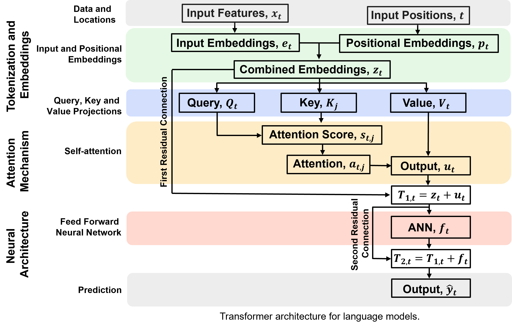
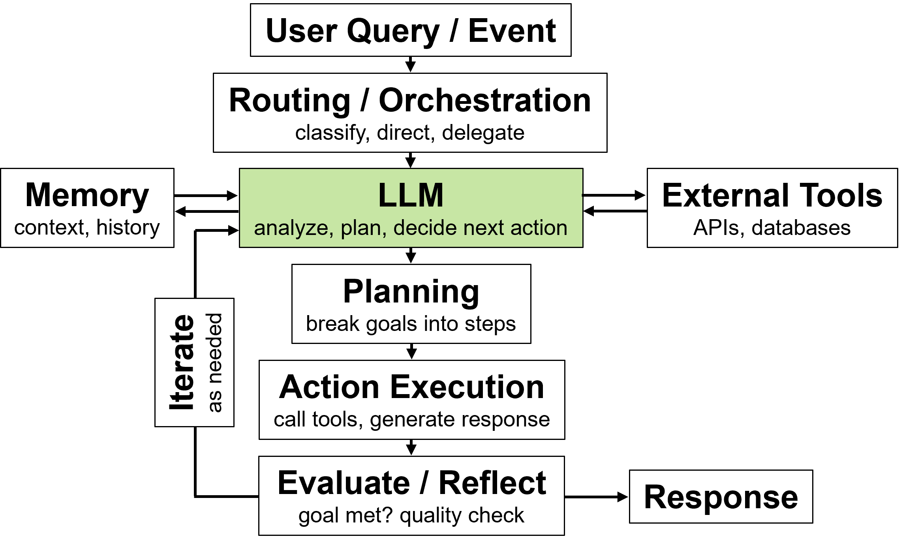
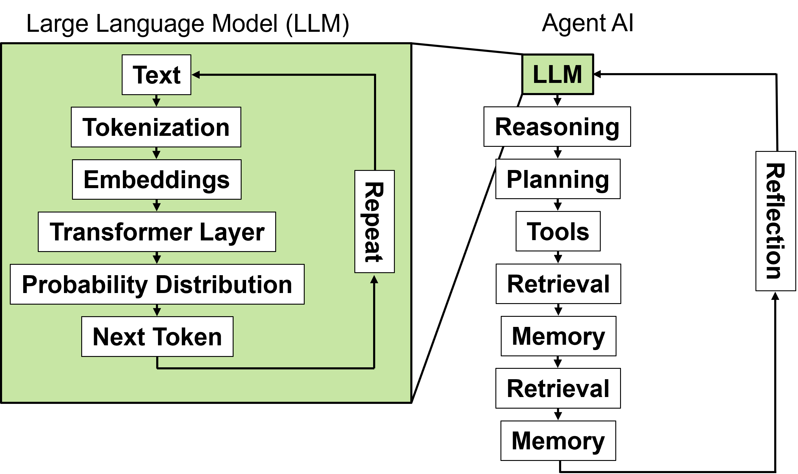
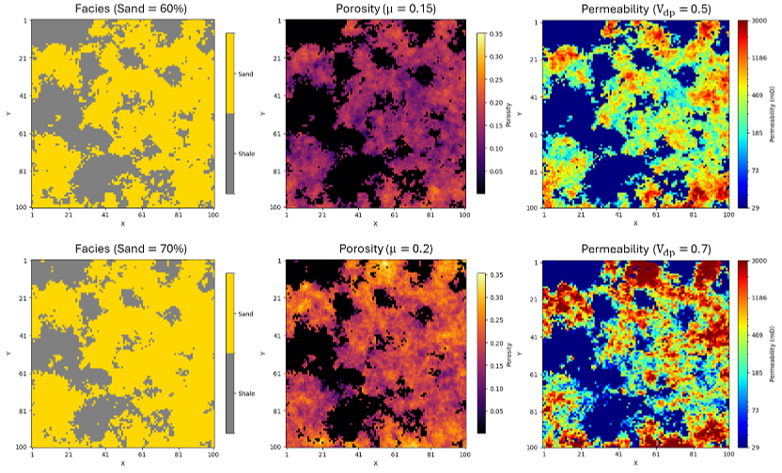
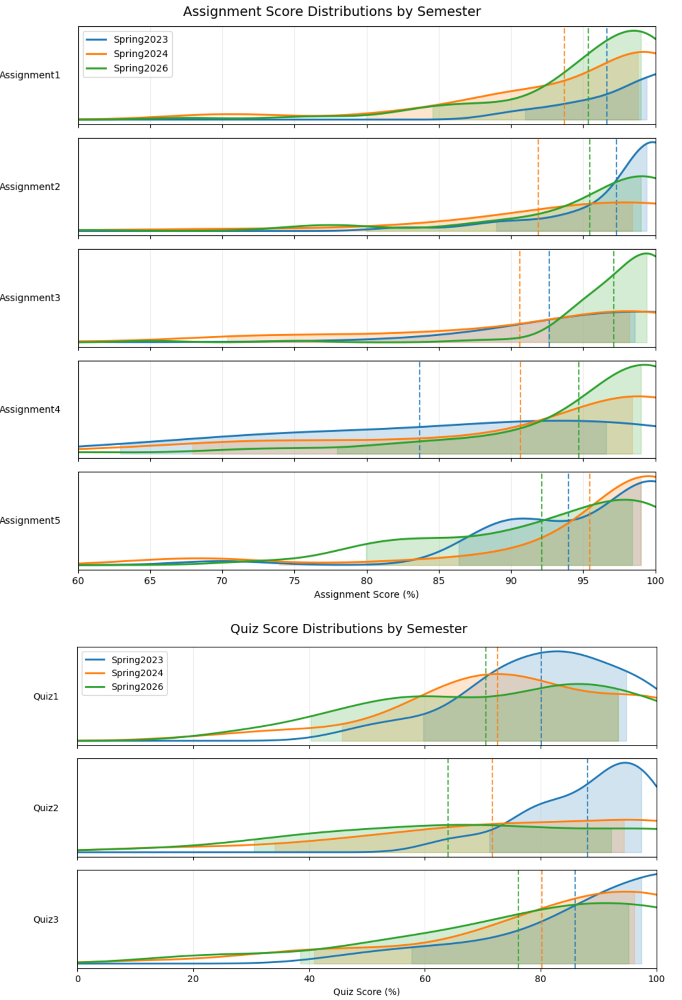
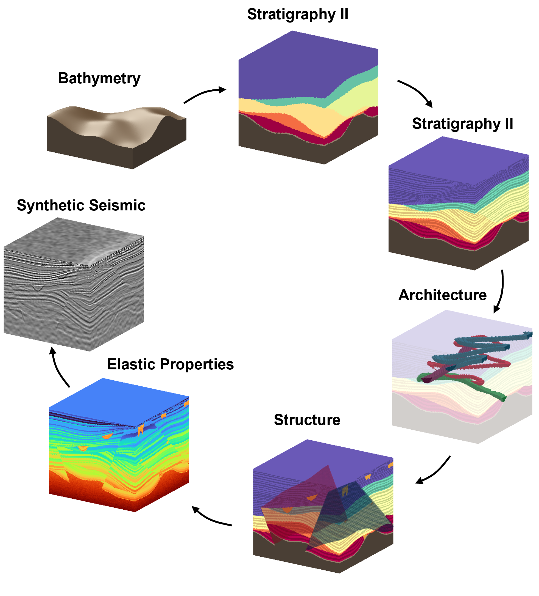

Agentic AI#
Michael J. Pyrcz, Professor, The University of Texas at Austin
Twitter | GitHub | Website | GoogleScholar | Geostatistics Book | YouTube | Applied Geostats in Python e-book | Applied Machine Learning in Python e-book | LinkedIn
Chapter of e-book “Applied Machine Learning in Python: a Hands-on Guide with Code”.
Cite this e-Book as:
Pyrcz, M.J., 2024, Applied Machine Learning in Python: A Hands-on Guide with Code [e-book]. Zenodo. doi:10.5281/zenodo.15169139 
The workflows in this book and more are available here:
Cite the MachineLearningDemos GitHub Repository as:
Pyrcz, M.J., 2024, MachineLearningDemos: Python Machine Learning Demonstration Workflows Repository (0.0.3) [Software]. Zenodo. DOI: 10.5281/zenodo.13835312. GitHub repository: GeostatsGuy/MachineLearningDemos 
By Michael J. Pyrcz
© Copyright 2024.
This chapter is on Agentic AI. For this chapter there is no code, nor demonstrations. We focus on concepts, along with potential opportunities and issues.
YouTube Lecture: check out my lectures on:
These lectures are all part of my Machine Learning Course on YouTube with linked well-documented Python workflows and interactive dashboards. My goal is to share accessible, actionable, and repeatable educational content. If you want to know about my motivation, check out Michael’s Story.
Motivation#
Bridge from Neural Networks and Transformers to Agentic AI
an LLM generates language
an agentic AI system uses an LLM to pursue objectives, interact with its environment, and evaluate the results of its actions.
From Transformer-based Large Language Models (LLM) to Agentic AI#
We have built models that learn patterns, represent information, and generate predictions.
What changes when we give these models objectives, tools, and the ability to act?
Central question: How do language models become autonomous problem solvers?

How does a large language model work? From text to predictions:
Tokenization breaks language into manageable numerical identifiers.
Input Embeddings represent tokens as numerical vectors that capture learned relationships.
Positional Embeddings provide information about token order and position.
Attention contextualizes each token by learning which other tokens matter.
Transformer Layers progressively transform representations to capture relationships across the context.
The neural network learns patterns that enable the model to predict the next token as a probability distribution conditioned on the preceding context.
An LLM doesn’t retrieve the next word from a dictionary. It predicts what comes next based on patterns learned from enormous amounts of data.
an LLM predicts what comes next.
an agentic AI system uses those predictions to decide what to do next.
What a LLM Does?#
LLMs are powerful pattern recognition and language generation systems. What can they do, and what can they not do?
They can perform reasoning-like tasks through sequential token generation.
Generating a sequence of tokens, evaluating intermediate results, and incorporating new information can simulate important aspects of reasoning.
They do not inherently have persistent objectives, reliable memory, or the ability to interact with external systems.
An LLM’s capabilities are bounded by the information available to it and the reliability of its information sources.
Generating a plan is different from executing a plan.
An LLM can become part of an autonomous problem-solving system when connected to executable tools, feedback mechanisms, and the authority to take actions.
Consider: Is a model that can describe how to solve a problem actually solving the problem?
intelligence in generating an answer versus capability in accomplishing an objective.
Agentic AI Architecture#
The LLM becomes the reasoning and language interface within a larger system.
Additional components provide capabilities beyond text generation.
The system can take actions, observe outcomes, and decide what to do next.

Remember:
The ability to describe an action is not the same as the ability to perform it.
The ability to perform an action is not the same as the ability to perform it reliably.
Components of an AI Agent#
Consider the components of an LLM and an agentic AI system.

Here are the components, their purposes, and some comments:
Component |
Purpose |
Comments |
|---|---|---|
Reasoning |
Interpret information and evaluate options |
Sequential generation and feedback simulate aspects of reasoning. |
Planning |
Break objectives into achievable steps |
Steps are mapped to available tools and external resources. |
Tools |
Interact with external systems |
Connect the model to external capabilities and information. |
Retrieval |
Access relevant external knowledge |
Grounds responses in relevant, accessible information. |
Memory |
Retain useful information and context |
Retains context and information across interactions. |
Execution |
Carry out planned actions |
Translates generated plans into real-world actions. |
Reflection |
Evaluate outcomes and adjust behavior |
Feedback from execution is what makes the system adaptive. |
Consider these three important distinctions:
Tools allow interaction with the outside world (calculators, databases, APIs, software).
Retrieval provides access to information not contained in the model’s immediate context.
Memory allows information and experience to persist across interactions.
Consider: What can an agent accomplish that an LLM operating alone cannot?
Move beyond generating answers to pursuing goals.
Let’s reflect on two sets of comparisons related to these agentic AI components.
1. Reasoning and reflection are different.
Reasoning: What should I do?
Reflection: Did what I did work, and what should I change?
2. Memory versus retrieval: An agent can use a vector database to support both functions.
Retrieval accesses relevant information from an external knowledge source.
Memory stores and retrieves information about previous interactions, observations, and experience.
Autonomy, Reliability, and Human Oversight#
Human-in-the-loop oversight and agent autonomy:
Autonomy is a spectrum, not an on/off switch.
Greater autonomy requires greater trust, verification, and control.
Tool permissions and stopping conditions matter.
Human oversight is essential for high-consequence decisions.
Consider the difference between recommending an action, requesting approval, and executing an action independently.
Critical Questions:
What objective would you give an agent?
What information would it need?
What tools should it access?
What decisions could it make independently?
When should it stop and ask for human input?
We can summarize autonomy and human oversight as follows,
Level |
Agent behavior |
Human involvement |
|---|---|---|
1. Recommend |
Proposes an action |
Human decides and executes |
2. Request approval |
Plans and prepares an action |
Human approves before execution |
3. Execute independently |
Plans, acts, and evaluates outcomes |
Human establishes boundaries and monitors |
How do we decide?
Decision Authority = Value of Action vs. Risk of Action
Value: What benefit or improvement could the action deliver?
Risk: What could go wrong, and what are the consequences?
Delegate autonomy in proportion to the value of the opportunity and the acceptable risk of the action.
Or even more concise:
Higher potential risk \(\rightarrow\) Greater human oversight.
Integrating Agentic AI#
Let’s consider a variety of potential use cases for agentic AI in the subsurface and discuss the associated considerations.
Agentic AI System for Subsurface Analysis#
Objective: Investigate an unexpected decline in production from a well.

The agent could:
Retrieve well history and production data.
Query relevant geological and engineering information.
Identify possible explanations.
Run analytical tools and compare scenarios.
Evaluate results and request additional information.
Produce a documented assessment for an engineer.
But the engineer or geoscientist retains responsibility for validation and consequential decisions.
Now let’s get more specific about the tasks and levels of assistance from agentic AI.
Unexpected Decline in a Well#
Consider the following levels of AI assistance. Which level would be acceptable in your opinion, and why?
Assist |
Augment |
Collaborate |
Direct |
Conduct |
|---|---|---|---|---|
1. AI-Assisted |
2. AI-Augmented |
3. AI-Collaborative |
4. AI-Directed |
5. AI-Autonomous |
AI helps the professional perform the task. |
AI performs part of the task; the professional directs and integrates the work. |
AI and the professional iteratively perform the task together. |
The professional specifies the objective; AI plans and executes most of the workflow. |
AI conducts the task with minimal human intervention. |
Summarizes production data, flags anomalies, and suggests possible causes. |
Analyzes well data, ranks potential causes, and recommends diagnostic tests. |
Works interactively with the engineer to investigate hypotheses, interpret results, and refine the diagnosis. |
Independently coordinates data retrieval, diagnostic workflows, and analysis, presenting findings and recommended interventions for approval. |
Autonomously investigates, executes authorized workflows, implements approved interventions, and monitors the well’s response. |
At what level would you trust an AI agent to investigate a production decline? At what level would you trust it to take corrective action?
Selecting Locations for the Next Wells#
Now consider the following levels of AI assistance. Which level would be acceptable in your opinion, and why?
Assist |
Augment |
Collaborate |
Direct |
Conduct |
|---|---|---|---|---|
1. AI-Assisted |
2. AI-Augmented |
3. AI-Collaborative |
4. AI-Directed |
5. AI-Autonomous |
AI helps the professional perform the task. |
AI performs part of the task; the professional directs and integrates the work. |
AI and the professional iteratively perform the task together. |
The professional specifies the objective; AI plans and executes most of the workflow. |
AI conducts the task with minimal human intervention. |
Maps existing wells, summarizes geological data, and identifies potential drilling locations. |
Ranks candidate locations using geological, production, and economic criteria. |
Works with the geoscientist to evaluate trade-offs, test scenarios, and refine well locations. |
Independently evaluates the development area, optimizes candidate locations, and recommends a drilling sequence for approval. |
Autonomously updates the development plan, selects and executes authorized well-location decisions, and learns from drilling and production outcomes. |
Would you trust an AI agent to select the next well location? Would you trust it to authorize the drilling investment?
Developing a New Production Forecasting Workflow#
Now consider the following levels of AI assistance. Which level would be acceptable in your opinion, and why?
Assist |
Augment |
Collaborate |
Direct |
Conduct |
|---|---|---|---|---|
1. AI-Assisted |
2. AI-Augmented |
3. AI-Collaborative |
4. AI-Directed |
5. AI-Autonomous |
AI helps the professional perform the task. |
AI performs part of the task; the professional directs and integrates the work. |
AI and the professional iteratively perform the task together. |
The professional specifies the objective; AI plans and executes most of the workflow. |
AI conducts the task with minimal human intervention. |
Explains forecasting methods, identifies relevant data, and suggests potential workflows. |
Builds forecasting models, compares algorithms, and evaluates predictive performance. |
Works with the engineer to design, test, validate, and refine the workflow. |
Independently develops and validates the forecasting workflow, presenting it for review and approval. |
Autonomously deploys the workflow, generates forecasts, monitors performance, and updates models as new data arrive. |
Would you trust an AI agent to develop and validate a forecasting workflow? Would you trust it to deploy that workflow and automatically update the models used for operational or reserves decisions?
Agentic AI Issues#
Here are some potential issues with the use of agentic AI:
Off-skilling: Over-reliance on AI can erode fundamental technical skills, critical thinking, and independent problem-solving, i.e., Pick the skills you can afford to lose and assign those to agents.
Cognitive dependency: When AI routinely supplies answers, we may gradually lose the habit of questioning assumptions and working through difficult problems.
Loss of expertise: If junior professionals delegate foundational tasks, how will they develop the experience and intuition required to become senior experts?
Let’s dive into the concept of off-skilling.
Off-Skilling#
I’ve experienced the following example in my courses. I’ve observed a noticeable shift in average grades during the Spring 2026 semester:
Improved assignment scores – take-home assignments completed with access to a computer and potentially AI agents.
Reduced quiz scores – in-class exams completed with pen and paper, without access to a computer or phone, i.e., no access to agents.

If you look carefully, you’ll see some changes in the distribution shapes that may be instructive, although, given the small sample size, take these observations with a grain of salt.
Quiz 1 appears to be bimodal, while Quizzes 2 and 3 have a large lower tail. Is it possible that this reflects two different student populations? Students who complete their assignments and retain good study habits, and students who use agentic AI to complete assignments and summarize course notes, potentially reducing their understanding and retention?
Assignment 5 was more open-ended and required more creativity. Did students using agentic AI perform worse on this assignment?
Of course, we need more data. Any causal analysis would require a more rigorous, controlled, and thorough experiment.
Yet, it is clear that there has been a shift in student performance over this past year.
Agentic AI Getting It Wrong#
Sometimes agentic AI gets it wrong. What causes reliability issues with agentic AI?
Hallucinations: LLMs can generate convincing but factually incorrect information.
Compounding errors: In agentic workflows, an early mistake can propagate through multiple subsequent decisions and actions.
False confidence: Fluent explanations and polished outputs can create an illusion of accuracy and understanding.
Verification challenges: Complex workflows may make it difficult to identify where an error originated.
Reproducibility: Different prompts, model versions, retrieved information, and execution paths can produce different results.
Let’s dive into hallucinations, false confidence, and reproducibility.
Hallucinations#
Learned embeddings and relationships between tokens allow LLMs to model statistical patterns in language. Stochastic methods use these learned relationships to generate language and produce reasoning-like responses.
Statistical associations do not guarantee factual accuracy. Incomplete training information, ambiguous context, or unsupported relationships can result in fabricated information.
This raises a deeper philosophical question: If LLMs and agents are simulating human speech and decision-making, isn’t their output always, in some sense, constructed? Let’s not get stuck here and instead consider mitigation strategies.
Mitigation:
Retrieval-augmented generation (RAG) – connect an LLM to a controlled knowledge source so it can retrieve relevant information when generating responses. For example, provide a pretrained LLM with access to a curated collection of reports related to subsurface engineering and resource extraction.
Use external tools – give the agent access to verified methods and workflows, including numerical flow simulators, geostatistical simulators, and decision-making tools, so that calculations can be performed using established methods.
Verification cases – benchmark agent results against known verification cases and expected outcomes.
Human oversight – maintain human oversight, particularly for consequential decisions. Ask the agent to provide calculation details and intermediate results to allow expert review of the applied workflows and methods.
Abstention – design agents to respond, “I don’t know” or “I cannot do that” when they lack the required resources, information, or capabilities.
Ask for uncertainty – request uncertainty estimates and supporting evidence for agent responses. Independently evaluate whether these uncertainties are justified and calibrated.
False Confidence#
Fluent explanations and polished outputs can create an illusion of accuracy and understanding.
Responses are often beautifully structured, technically sophisticated, and highly persuasive.
The use of agentic AI is becoming routine and accepted across many applications.
Agentic AI is easy to use and accessible to many, but difficult to explain and understood by relatively few.
Agentic AI can become an unquestioned authority, and this is a recipe for train wrecks.
Mitigation:
Independently check responses – perform calculations independently using established workflows and methods.
Ask for uncertainty – request uncertainty estimates and supporting evidence for agent responses.
Challenge the conclusion – actively seek to falsify results from agentic AI, applying the critical approach required by the scientific method.
Reproducibility#
An LLM is a stochastic text generator, with sources of variability at multiple levels, including language generation, tools, and their versions.
Every response can be a different realization. Therefore,
Mitigation:
Fix model and tool versions – document and control the versions of models, external tools, and software dependencies.
Set random number seeds – where supported, fix random number seeds to improve reproducibility of stochastic operations.
Reduce generator randomness – use lower temperature settings to reduce variation in generated responses.
Record execution details – retain prompts, retrieved information, tool inputs and outputs, model settings, and intermediate results to support auditing and reproduction of workflows.
In summary,
verification is not an optional final step. It must be designed into the agentic workflow.
To better understand agentic AI reproducibility, let’s fill in more details on temperature and random number seeds.
Temperature#
Temperature controls how predictable an LLM’s generated responses are, not how capable or autonomous the agent is. It adjusts the probability distribution used when sampling the next token. Lower temperatures favor higher-probability tokens, while higher temperatures allow less-probable tokens to be selected more often.
Low temperature (e.g., 0.0–0.2): More predictable, consistent, and conservative responses. The model favors higher-probability tokens.
Medium temperature (e.g., 0.5–0.7): More variation in wording, generated responses, and potential approaches.
High temperature (e.g., 0.8–1.0+): More diverse and less predictable responses, with greater potential for unusual ideas and mistakes.
Agent task |
Suggested temperature |
|---|---|
Mathematical calculations |
0.0–0.2 |
Data analysis |
0.0–0.2 |
Tool selection |
0.0–0.2 |
Planning and task decomposition |
0.2–0.5 |
Research and synthesis |
0.3–0.6 |
Brainstorming solutions |
0.7–1.0 |
Creative content generation |
0.7–1.0 |
These are illustrative starting points, not universal settings. The appropriate temperature depends on the model, task, and application. For calculations and data analysis, deterministic external tools are preferable to relying on generated text, regardless of temperature.
Random Number Seed#
Temperature controls how much variation we encourage; the random seed helps us reproduce the variation.
When an LLM generates a response, it samples from a probability distribution of possible next tokens. A random number seed initializes the pseudorandom number generator used in this sampling process. Using the same seed, with otherwise identical conditions, can help reproduce the same sequence of sampling decisions.
Important considerations:
A fixed seed can improve reproducibility, but does not guarantee identical outputs across different models, model versions, hardware, APIs, or multi-agent workflows.
External tools, changing data, and nondeterministic execution can also affect results.
A fixed seed does not make a high-temperature response predictable; it makes the sampling process more repeatable under otherwise identical conditions.
Not all LLM providers or APIs expose a random seed parameter, and some provide only best-effort reproducibility.
For reproducible agentic AI workflows, record the model and version, temperature, random seed (when available), prompts, tool inputs and outputs, retrieved information, and relevant software settings. This makes it easier to audit and investigate differences between runs.
Professional Standards#
Professional societies are establishing professional standards for the use of AI. Some common principles include:
The use of AI remains within the scope of competent professional practice, with all the responsibilities and obligations of professional practice.
AI is a tool, like other professional software. The professional remains responsible for understanding the methods, evaluating the results, and exercising appropriate judgment.
This brings us to an important question: Who controls the agent, and who remains accountable for its actions?
Who is Responsible?#
Autonomy without accountability: Who is responsible when an AI agent makes a consequential decision or takes an incorrect action?
Unintended consequences: An agent may faithfully pursue an objective while producing outcomes that were never intended.
Security vulnerabilities: Prompt injection, malicious retrieved content, and unauthorized tool access can manipulate agent behavior.
Loss of control: Agents with broad permissions can take actions, modify information, or interact with external systems faster than humans can supervise.
Confidentiality: Sensitive data may be exposed through prompts, retrieval systems, external tools, or connected applications.
What Happens to Expertise?#
These are the big human questions:
If AI performs the analysis, who develops the next generation of expert analysts?
If students delegate problem-solving, how do they develop technical intuition?
If professionals stop checking the underlying mathematics, how will they recognize when the answer is wrong?
If organizations replace expertise with automation, where will the judgment come from when the automation fails?
If we optimize for productivity today, are we sacrificing the expertise we need tomorrow?
Are we building more capable humans, or making humans less capable?
These are important questions. But they are not arguments against progress. They are reminders that we must be thoughtful about how we develop, deploy, and work with agentic AI.
Let’s end on a positive note and explore some agentic AI optimism.
Agentic AI Opportunities#
There are amazing opportunities with agentic AI. Let’s talk about some of the possibilities.
Age of Amplified Human Potential#
I agree, with agentic AI we can accomplish much more. Even with this e-book, I have accelerated my writing.
I don’t spend time manually writing Markdown equations. Instead, I ask agentic AI to convert equations from my PowerPoint slides or create the Markdown representation from an equation description.
I check my writing and, at times, ask agentic AI to help improve the grammar, clarity, and conciseness of my statements.
As a professor, I have seen an improvement in my students’ writing as they use agentic AI to check and improve the grammar, logical flow, and clarity of their writing.
I spend less time working as a line editor and more time focused on defensible, clear scientific communication.
Here are some ideas for the opportunities in the age of amplified human potential.
Explore the impossible: Investigate more ideas, hypotheses, and possibilities than ever before.
Accelerate discovery: Move from questions to experiments, analysis, and insights at unprecedented speed.
Multiply expertise: Bring together knowledge, tools, and capabilities across disciplines.
Democratize innovation: Give more people access to powerful analytical and computational capabilities.
Solve bigger problems: Tackle complex scientific, engineering, environmental, and societal challenges.

The Future Belongs to Those Who Can Think, Create, and Collaborate#
I do not feel that agentic AI will replace human ingenuity. Here are some ideas to support this:
Fundamentals still matter: Mathematics, science, engineering, and critical thinking become even more valuable.
Creativity becomes leverage: Our ability to ask better questions and imagine new possibilities becomes a competitive advantage.
Expertise becomes scalable: One expert can orchestrate AI capabilities to accomplish work that once required a much larger team.
Learning becomes continuous: We can explore unfamiliar disciplines, develop new skills, and accelerate our intellectual growth.
Human ambition sets the direction: AI expands what we can accomplish, but we decide what is worth accomplishing.
AI is not the end of human ingenuity. It may be the greatest amplifier of human ingenuity we have ever created.
A potential roadmap to maximize value with AI at work:
AI should help us… |
Humans must retain… |
|---|---|
Process more information |
Critical thinking |
Explore more alternatives |
Judgment |
Automate repetitive work |
Fundamental skills |
Generate hypotheses |
Scientific skepticism |
Execute complex workflows |
Accountability |
Accelerate learning |
Understanding |
We could say:
The greatest risk of AI isn’t that machines become too intelligent,
it’s that humans stop developing their own intelligence.
Chapter Summary#
The Transformer is the engine; the agent is the system
The Transformer provides the language modeling capability. Agentic architecture adds planning, tools, memory, feedback, and execution.
Prediction becomes action
An LLM predicts the next token. An agentic system uses model-generated outputs to select actions, observe their consequences, and determine what to do next.
Autonomy requires feedback and judgment
The ability to execute actions does not automatically make an agent reliable. Verification, feedback, constraints, and human oversight are essential.
Human productivity increases, but human ingenuity remains critical
Enhanced human productivity still requires strong fundamentals, creativity, critical thinking, and expertise.
About the Author#

Michael Pyrcz is a professor in the Cockrell School of Engineering, and the Jackson School of Geosciences, at The University of Texas at Austin, where he researches and teaches subsurface, spatial data analytics, geostatistics, and machine learning. Michael is also,
the principal investigator of the Energy Analytics freshmen research initiative and a core faculty in the Machine Learn Laboratory in the College of Natural Sciences, The University of Texas at Austin
an associate editor for Computers and Geosciences, and a board member for Mathematical Geosciences, the International Association for Mathematical Geosciences.
Michael has written over 100 peer-reviewed publications, a Python package for spatial data analytics, co-authored a textbook on spatial data analytics, Geostatistical Reservoir Modeling and author of two recently released e-books, Applied Geostatistics in Python: a Hands-on Guide with GeostatsPy and Applied Machine Learning in Python: a Hands-on Guide with Code.
All of Michael’s university lectures are available on his YouTube Channel with links to 100s of Python interactive dashboards and well-documented workflows in over 40 repositories on his GitHub account, to support any interested students and working professionals with evergreen content. To find out more about Michael’s work and shared educational resources visit his Website.
Want to Work Together?#
I hope this content is helpful to those that want to learn more about subsurface modeling, data analytics and machine learning. Students and working professionals are welcome to participate.
Want to invite me to visit your company for training, mentoring, project review, workflow design and / or consulting? I’d be happy to drop by and work with you!
Interested in partnering, supporting my graduate student research or my Subsurface Data Analytics and Machine Learning consortium (co-PI is Professor John Foster)? My research combines data analytics, stochastic modeling and machine learning theory with practice to develop novel methods and workflows to add value. We are solving challenging subsurface problems!
I can be reached at mpyrcz@austin.utexas.edu.
I’m always happy to discuss,
Michael
Michael Pyrcz, Ph.D., P.Eng. Professor, Cockrell School of Engineering and The Jackson School of Geosciences, The University of Texas at Austin
More Resources Available at: Twitter | GitHub | Website | GoogleScholar | Geostatistics Book | YouTube | Applied Geostats in Python e-book | Applied Machine Learning in Python e-book | LinkedIn
Comments#
This was a basic treatment of transformers, with a simple transfomer built from scratch and applied to 2 simple demonstration problems. Much more could be done and discussed, I have many more resources. Check out my shared resource inventory and the YouTube lecture links at the start of this chapter with resource links in the videos’ descriptions.
I hope this is helpful,
Michael